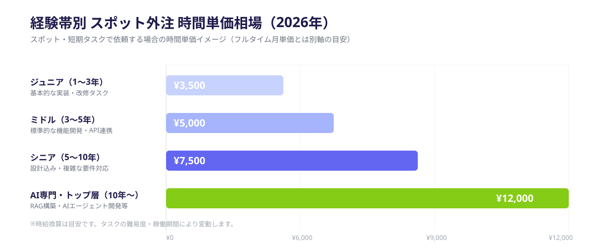
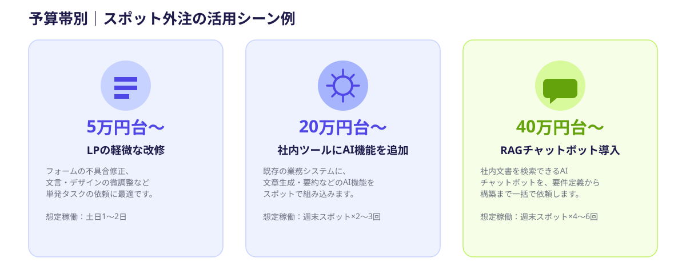

スポット外注を検討するとき、最初にぶつかる壁が「結局いくらかかるのか分からない」という点です。求人サイトの単価情報は月単価ベースが多く、エージェントの見積もりは要件定義費や管理費が混ざって総額が見えにくく、フリーランスのプロフィールに書かれた単価もバラバラで比較しづらい——という声をよく聞きます。
この記事では、2026年時点の市場データをもとに経験帯別の時間単価とタスク別の費用相場を整理し、見積もりが高いのか適正なのかを判断できる基準を提示します。あわせて、コストを抑えるために発注者側でできる3つの工夫も紹介します。
なぜ「スポット外注の費用感」が分かりにくいのか
フリーランス・副業エンジニアの単価情報は、主に「月単価（フルタイム稼働を想定した月額）」で公開されていることがほとんどです。ところが、スポット外注で依頼したいのは「土日だけ」「タスク単位で数日」といった短時間の稼働であり、月単価をそのまま日数で割っても実態に近い金額にはなりません。
さらに、大手の受託開発会社やSES経由の見積もりには、要件定義・管理費・テスト工程などのコストが上乗せされているため、「エンジニアの作業そのものにいくら払っているのか」が見えにくくなっています。スポット外注の費用感を理解するには、まず「時間単価」と「タスクの作業量」に分解して考える必要があります。
- 公開されている単価情報の多くが「フルタイム月単価」ベースである
- 受託開発の見積もりには管理費・要件定義費が含まれ、作業費が見えにくい
- エンジニアの経験帯によって単価の差が大きく、相場の幅が広い
2026年版｜経験帯別の時間単価相場
フリーランスエンジニアの月単価相場は、2026年時点で全体平均が月70万〜80万円程度とされています。これをスポット外注で依頼する場合の時間単価に近い形で整理すると、経験帯によって次のような幅があります。

ジュニア帯（経験1〜3年）は時給3,000円台からが目安ですが、AIエージェント開発・RAG構築など専門性の高いタスクを依頼する場合は、シニア帯〜トップ層の単価（時給7,500〜12,000円程度）になることが多くなります。これは、AI関連のスキルを持つエンジニアの月単価平均が90万円台と、全体平均より高くなっている市場動向とも一致します。
なお、スポット・短期PoC案件はフルタイム契約より時給換算で割高になりやすい傾向があります。稼働期間が短く、案件ごとに契約・引き継ぎコストが発生するためで、これは妥当な市場原理であり、極端に低い見積もりほど「品質や対応範囲が削られている」リスクを疑う目安にもなります。
タスク別の費用相場（バグ修正〜AI導入まで）
時間単価だけでは予算感がつかみにくいため、よくある依頼内容を「総額の目安」として整理しました。実際の金額は要件の複雑さやエンジニアの経験帯によって変動しますが、おおよその予算感を掴むための参考にしてください。
- バグ修正・小規模改修：2万円〜8万円
- LP制作・簡易サイト構築：5万円〜20万円
- 既存システムのAPI連携・機能追加：8万円〜30万円
- 社内ツール開発・小規模AI PoC：10万円〜40万円
- RAG導入・AIエージェント構築：20万円〜60万円
金額の幅が大きいのは、同じ「社内ツール開発」でも画面数・連携先の数・データ量によって作業量が大きく変わるためです。見積もりを依頼する際は、総額だけでなく「どのタスクにどれだけの時間がかかる想定か」を確認すると、相場との比較がしやすくなります。
コストを抑える3つのコツ
同じ依頼内容でも、依頼の仕方次第で見積もり額は変わります。発注者側でコストを抑えるためにできる工夫は、主に次の3つです。
コツ1｜要件を「タスク単位」に分解してから依頼する
「AIツールを作ってほしい」のような大きな依頼のままだと、エンジニア側は要件定義の工数まで見積もりに含める必要があり、その分費用が上がります。「対象データはこれ」「出力形式はこう」「画面はこの1つだけ」のようにタスク単位に分解してから依頼すると、要件定義の手間が減り、見積もりもタスクの作業量に近い金額になります。
コツ2｜運用・保守は依頼範囲から切り分ける
「作ったあとの保守・運用も含めて」という依頼は、エンジニア側がリスクを見積もりに上乗せしやすくなります。まずは構築のみを依頼し、運用・保守は稼働実績を見てから別途相談する形にすると、初回の依頼コストを抑えられます。
コツ3｜1人のスポットエンジニアに任せられる粒度に絞る
規模の大きい依頼を複数人のチーム体制で受託すると、メンバー間の調整・管理コストが発生し、見積もりに反映されます。1人のスポットエンジニアが土日や数日のタスク単位で完結できる規模に絞ることで、管理コストの上乗せを避けられます。
こんな予算ならこんな依頼ができる｜活用シーン
実際の予算感をイメージしやすくするため、ANKENでよくある依頼パターンを予算帯別に整理しました。

このように、「何を依頼するか」を先に決めて予算と照らし合わせる方が、「いくらで何を作ってもらえるか」を漠然と探すより、見積もりの精度も交渉のしやすさも上がります。
よくある質問
- Q. スポット外注の費用相場はどのくらいですか？
- A. タスクの難易度やエンジニアの経験帯により異なりますが、数万円〜数十万円が費用の目安です。
- Q. 大手受託との費用の違いは何ですか？
- A. 大手受託は管理費や間接コストが上乗せされますが、スポット外注はほぼ開発費のみです。
- Q. コストを抑えるコツはありますか？
- A. タスクを細かく分割する、要件を明確にする、経験帯を見極めるの3つがコツです。
まとめ・ANKENへのご相談
スポット外注の費用感は、「時間単価×作業量」で分解して考えることで、大手受託の見積もりとも比較しやすくなります。タスクを小さく切り分けて依頼するほど、見積もりの透明性も上がり、コストも抑えやすくなります。
「この内容ならいくらが相場か分からない」という段階でも、ANKENでは要件が固まっていない状態からのご相談を歓迎しています。タスクの切り分け方から一緒に整理することも可能です。固定費ゼロ・スポットから依頼できますので、まずは無料相談からお気軽にどうぞ。
「何をどこまで依頼すればこの予算で収まるか」を一緒に整理しながら、スポット発注のプランをご提案します。固定費ゼロ・週末スポットから依頼可能です。
👉 無料でスポット依頼を相談する初回相談は無料です。要件が固まっていなくてもOKです。